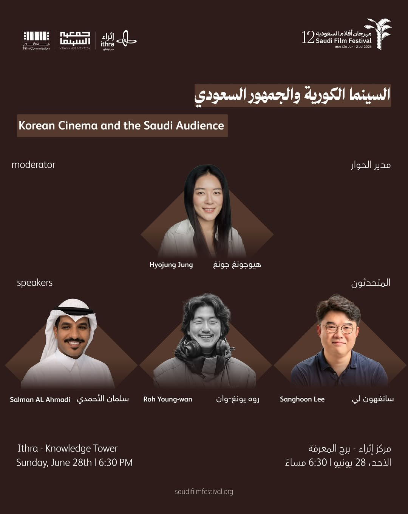
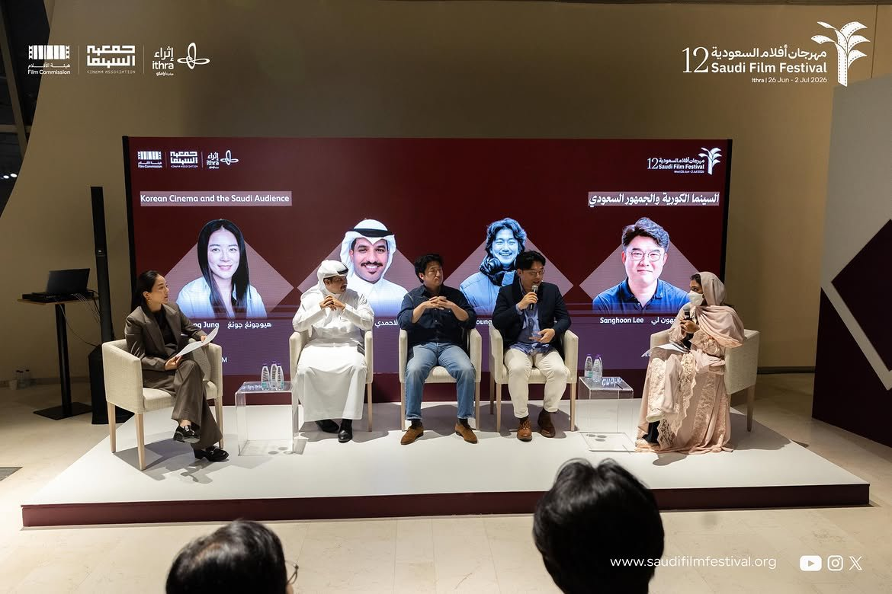
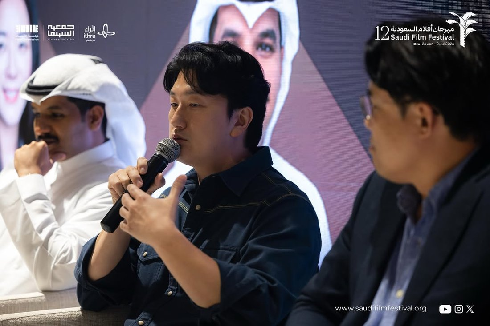
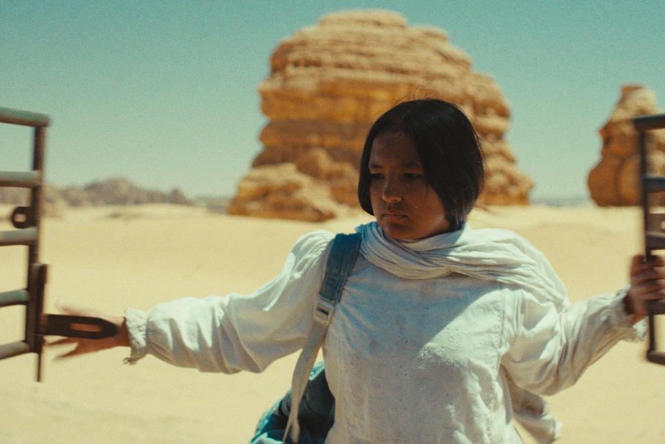
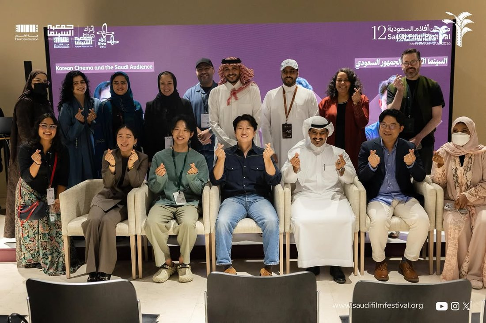
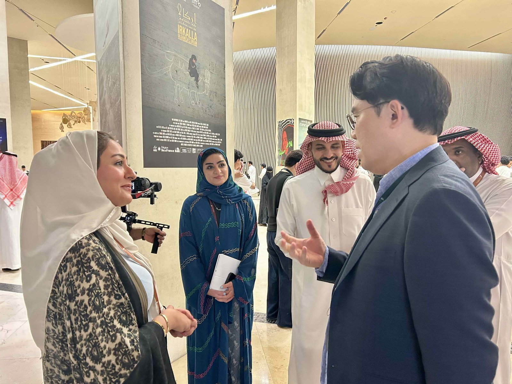

제12회 사우디 필름 페스티벌(Saudi Film Festival)이 열린 이쓰라(Ithra) 지식타워(Knowledge Tower) 3층에서 지난 6월 28일 ‘한국영화와 사우디 관객(Korean Cinema and the Saudi Audience)’을 주제로 한 패널 토론이 개최됐다. 이번 세션에는 영화 〈후광(HALO)〉의 노영완 감독, 부산국제단편영화제 이상훈 부집행위원장 겸 예술감독, 사우디 영화평론가 살만 알아흐마디(Salman Al Ahmadi)가 패널로 참여했으며, 리야드 세종학당 한국문화교원인 통신원이 사회를 맡아 진행했다. 이번 패널은 영화를 통해 한국과 사우디가 어떻게 서로를 이해하고 연결될 수 있는지를 중심으로 ▲한국영화의 세계화 ▲영화제의 역할 ▲사우디 관객이 한국영화에 공감하는 이유 ▲사우디 영화산업의 성장 ▲한·사우디 영화계의 협력 가능성 등 다양한 주제를 다뤘다.

‘한국영화와 사우디 관객’ 패널 토론 포스터 — 출처: 사우디 필름 페스티벌
한국영화의 세계화, 영화제는 어떤 역할을 했나
첫 번째 질문은 한국영화가 세계 영화계에서 지금과 같은 위상을 갖게 되는 과정에서 영화제가 어떤 역할을 했는지에 관한 것이었다. 이상훈 부산국제단편영화제 부집행위원장은 영화제를 단순히 영화를 상영하는 공간이 아니라, 수많은 작품 가운데 의미 있는 영화를 선정하고 큐레이션해 관객과 연결하는 플랫폼이라고 설명했다. 그는 20세기 말까지만 해도 한국영화는 국제 영화계에서 변방에 가까웠지만, 프랑스 낭트 3대륙영화제를 비롯해 브졸아시아영화제, 도빌아시아영화제 등 유럽 영화제들이 한국영화를 꾸준히 소개했고, 이후 칸·베니스·베를린 국제영화제를 거치며 한국영화가 세계 영화계의 주목을 받게 됐다고 설명했다. 이러한 흐름 속에서 ‘코리안 뉴웨이브(Korean New Wave)’가 세계 영화계의 한 축으로 자리 잡았으며, 이는 이후 한국 드라마와 케이팝, 음식 등 한국 문화 전반이 세계로 확산되는 기반이 됐다고 평가했다. 그는 “한국영화가 오늘날과 같은 국제적 위상을 갖게 된 데에는 영화제의 역할이 결정적이었다”고 강조했다.

패널 토론 현장 — 출처: 사우디 필름 페스티벌
이어 OTT 플랫폼의 성장으로 영화제의 역할이 변화했는지에 대한 질문이 이어졌다. 이 부위원장은 오히려 영화제의 역할이 앞으로 더욱 중요해질 것이라고 전망했다. 스마트폰과 인공지능 기술의 발전으로 앞으로는 지금보다 훨씬 많은 영화가 제작될 것이며, 그만큼 어떤 작품을 관객에게 소개할 것인가를 결정하는 ‘큐레이션’의 가치가 더욱 커질 것이라는 설명이다. 그는 “넷플릭스 역시 결국 하나의 큐레이션 플랫폼”이라며, 최근 한국에서는 극장 관객은 감소하는 반면 영화제 관객은 꾸준히 증가하고 있다는 점을 소개했다. 앞으로도 영화제는 새로운 작품과 창작자를 발굴하고 관객과 연결하는 중요한 문화 플랫폼으로서의 역할을 이어갈 것이라고 덧붙였다.
사우디 관객은 왜 한국영화에 공감하는가
사우디 영화평론가 살만 알아흐마디는 한국영화에 대한 사우디 관객들의 관심이 최근 갑자기 형성된 것이 아니라 오래전부터 꾸준히 이어져 왔다고 설명했다. 그는 개인적으로도 오랫동안 한국영화를 즐겨 봤으며, 특히 박찬욱 감독의 작품을 좋아한다고 소개했다. 이어 한국영화의 가장 큰 특징으로 예상치 못한 반전과 긴장감 있는 서사 구조를 꼽았다. 평범해 보이는 인물들이 전혀 예상하지 못한 사건을 마주하거나 극적인 선택을 하며 이야기가 전개되는 방식은 한국영화만의 독창적인 매력이라고 평가했다. 또한 한국영화는 장르적 재미뿐 아니라 인간의 감정과 사회적 현실을 함께 담아낸다는 점에서 문화적 차이를 넘어 사우디 관객들도 자연스럽게 공감할 수 있다고 설명했다.
영화 〈후광〉을 연출한 노영완 감독에게는 지역적인 이야기가 어떻게 세계 관객과 연결될 수 있는지에 대한 질문이 이어졌다. 노 감독은 전날 진행된 상영과 관객과의 대화(GV)를 언급하며, 사우디 관객들이 문화적 배경은 다르지만 작품 속 감정과 메시지를 깊이 이해하고 공감해 준 점이 매우 인상적이었다고 말했다. 그는 이러한 경험을 통해 영화가 언어와 국경을 넘어 사람과 사람을 연결하는 힘을 지닌 예술이라는 사실을 다시 한번 확인했다고 밝혔다. 이어 지역적인 이야기가 세계 관객에게도 공감을 얻는 이유는 결국 ‘사람’에 있다고 설명했다. 문화와 환경은 서로 다르지만 그 안에서 살아가는 사람들의 감정과 관계, 삶의 고민은 크게 다르지 않다며, 한 사회의 이야기를 깊이 들여다볼수록 오히려 다른 문화권의 사람들도 그 이야기를 이해하고 공감하게 된다고 말했다. 그는 “지역의 이야기를 깊이 있게 담아낼 때, 그 이야기는 더 이상 특정 지역만의 이야기가 아니라 모두의 이야기가 된다”고 덧붙였다.

패널 토론에서 질문에 답변하고 있는 노영완 감독 — 출처: 사우디 필름 페스티벌
문화적 정체성과 한·사우디 영화 협력
패널 후반부에서는 한국영화가 세계적인 성공을 거두면서도 문화적 정체성을 유지할 수 있었던 배경에 대한 질문이 이어졌다. 노 감독은 오늘날 한국영화의 경쟁력은 하루아침에 만들어진 것이 아니라 오랜 시간 선배 영화인들이 축적해 온 경험과 영화적 자산 위에서 가능했다고 설명했다. 수많은 작품이 제작되고 다양한 시도가 이어지면서 한국 영화계만의 문화적 데이터와 창작의 역사가 쌓였고, 그것이 현재 한국영화의 경쟁력으로 이어졌다는 것이다. 이어 앞으로도 영화를 꾸준히 만들고 서로 교류하며 공동 작업을 이어가는 과정 속에서 새로운 문화적 자산이 축적될 것이라며, 한국과 사우디 역시 지속적인 영화 교류를 통해 함께 성장해 나가길 기대한다고 말했다.
최근 사우디 영화산업의 성장과 양국 영화계의 협력 가능성에 대한 질문도 이어졌다. 이상훈 부위원장은 과거 중동 영화계에서는 이란이 대표적인 영화 강국으로 주목받았지만, 최근에는 레드씨 국제영화제(Red Sea International Film Festival)와 사우디 필름 페스티벌 등을 중심으로 사우디가 새로운 영화 허브로 빠르게 성장하고 있다고 평가했다. 또한 영화제 기간 동안 직접 만난 사우디의 젊은 감독과 제작자들의 작품에서 시나리오와 촬영, 편집 등 전반적으로 높은 완성도를 확인할 수 있었다며, 정부의 적극적인 지원과 창작자들의 역량이 함께 성장하고 있는 만큼 사우디 영화산업의 미래가 더욱 기대된다고 말했다. 이어 부산국제단편영화제가 운영하는 주빈국 프로그램에 향후 사우디아라비아를 초청하는 방안도 검토하고 있다고 밝혔다. 노 감독 역시 현재 차기작을 집필하고 있으며, 이번 사우디 방문을 계기로 사우디 제작진과 함께 작품을 만들어 보고 싶다는 의사를 밝혔다.
영화가 만든 새로운 연결
공식 패널이 종료된 뒤에도 관객들의 질문은 계속됐다. 한 영화감독 지망생이 시나리오 수정은 얼마나 이루어지며 언제쯤 완성됐다고 할 수 있는지 묻자, 노영완 감독은 본인도 계속 호텔에서 시나리오 작업을 하고 왔다며 “예산이 떨어지기 전에는 완성해야 한다”고 재치 있게 답해 객석의 웃음을 자아냈다. 이어 한 관객이 “사우디에서 케이팝과 한국 드라마, 한국영화가 큰 사랑을 받고 있다는 사실을 한국 사람들도 알고 있느냐”고 묻자, 이상훈 부위원장과 노영완 감독은 한국에서는 미처 체감하지 못했지만 사우디를 직접 방문해 현지 관객들의 높은 관심과 애정을 확인하며 놀랐다고 답했다.
패널 토론을 마무리하며 통신원은 한국영화가 사우디에서 꾸준히 소개되며 많은 사랑을 받고 있는 것과 달리, 한국에서는 아직 사우디 영화를 접할 기회가 많지 않다는 점을 언급했다. 이어 한국영화가 사우디 관객들에게 더 큰 공감을 얻기 위해서는 한국 역시 사우디 영화를 더 많이 만나고 이해하려는 노력이 필요하다고 강조했다. 또한 올해 처음 관람한 샤하다 아민(Shahad Ameen) 감독의 〈히즈라(Hijra)〉를 예로 들며, 한 편의 영화가 한 나라를 이해하는 가장 좋은 출발점이 될 수 있다고 말했다. 〈히즈라〉는 2026년 제98회 아카데미 국제장편영화상 부문 사우디아라비아 공식 출품작으로 선정됐으며, 베니스 국제영화제 스포트라이트 경쟁부문에 초청되는 등 국제적으로도 주목받은 작품이다.

영화 〈히즈라(Hijra)〉의 한 장면 — 출처: 레드씨 국제영화제
통신원은 특히 영화 속 성지순례의 여정을 따라 펼쳐지는 사우디 각 지역의 아름다운 자연경관과 다채로운 풍경이 인상적이었다며, 영화를 통해 사우디 사회와 문화, 그리고 여성들의 삶을 이전보다 더욱 깊이 이해하게 됐다고 말했다. 낯설게만 느껴졌던 문화가 한 편의 영화를 통해 훨씬 가깝고 친근하게 다가왔으며, 이것이야말로 문화예술이 지닌 가장 큰 힘이라고 덧붙였다. 끝으로 통신원은 “한국영화가 사우디에서 많은 사랑을 받고 있는 것처럼, 이제는 우리도 사우디 영화를 더 많이 만나야 한다”며, “서로의 예술을 이해하는 것이 서로의 문화를 이해하는 가장 좋은 출발점이 될 수 있다”고 말하며 패널 토론을 마무리했다.

패널 토론 단체사진 — 출처: 사우디 필름 페스티벌
패널 종료 직후에는 사우디 국영방송(Saudi Broadcasting Authority, SBA)이 이상훈 부위원장을 대상으로 별도의 인터뷰를 진행하며 한국 영화계가 바라본 사우디 영화산업에 대한 관심을 이어갔다. 사우디를 처음 방문했다는 이 부위원장은 “오기 전에는 더운 날씨 때문에 걱정을 많이 했지만, 이곳에서 만난 모든 분들이 매우 친절하게 맞아주셨다”고 소감을 밝혔다. 이어 “사우디 필름 페스티벌은 앞으로 더욱 발전할 가능성이 큰 영화제라고 생각한다”며 “한국과 사우디가 영화를 통해 함께 협력할 수 있는 기회가 앞으로 많이 생기길 바라며, 저 역시 함께 일해보고 싶다”고 말했다.

사우디 국영방송(SBA)과 인터뷰 중인 이상훈 부산국제단편영화제 부위원장 — 출처: 통신원 촬영
이번 패널은 한국영화가 세계와 소통해 온 경험을 공유하는 데 그치지 않고, 빠르게 성장하고 있는 사우디 영화산업과의 접점을 모색하며 한·사우디 영화 교류의 새로운 가능성을 확인한 자리였다. 영화가 언어와 국경을 넘어 서로 다른 문화를 이해하고 연결하는 가장 강력한 매개체가 될 수 있음을 다시 한번 보여준 의미 있는 시간이었다.
사진출처 및 참고자료
— 통신원 촬영
— 사우디 필름 페스티벌 공식 인스타그램(@saudifilmfestival), instagram.com/saudifilmfestival
— 베니스 국제영화제(Venice International Film Festival) 공식 홈페이지, labiennale.org
— 레드씨 국제영화제(Red Sea International Film Festival), redseafilmfest.com